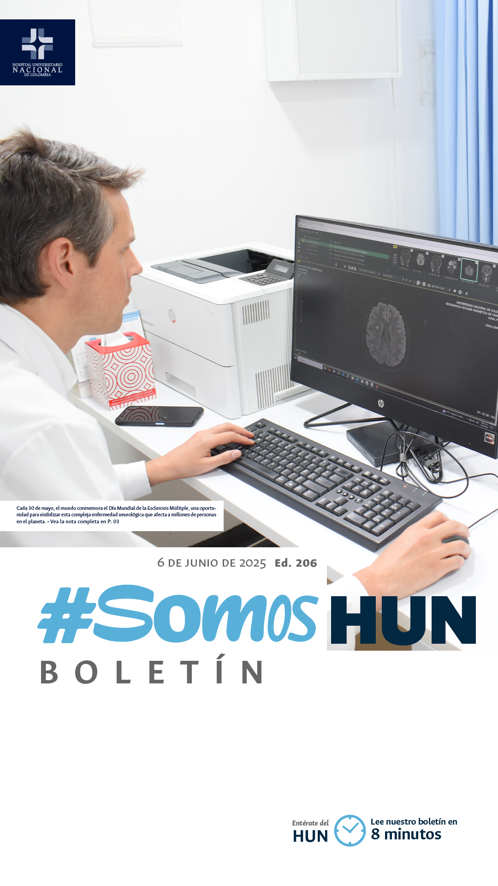
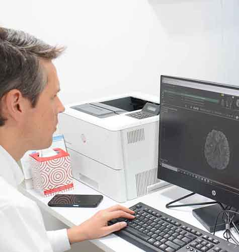
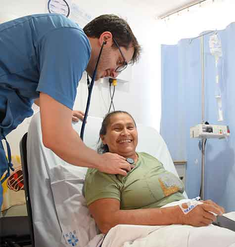
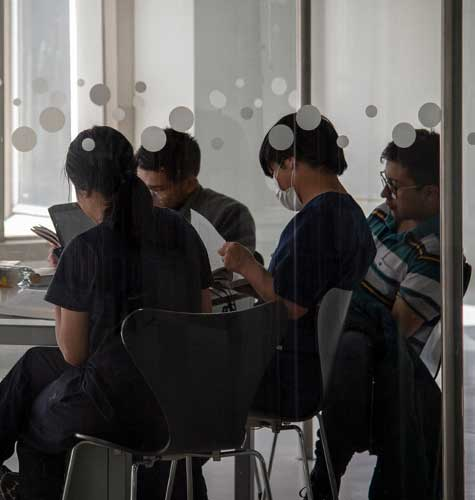
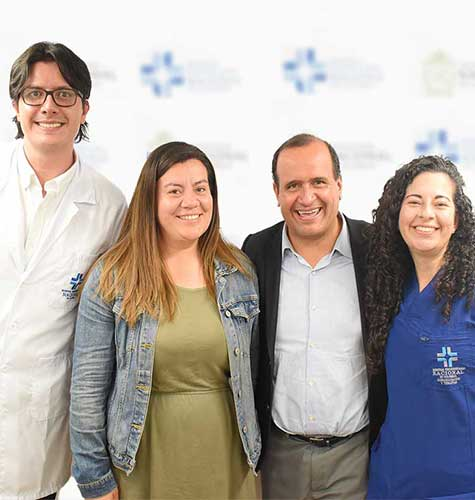
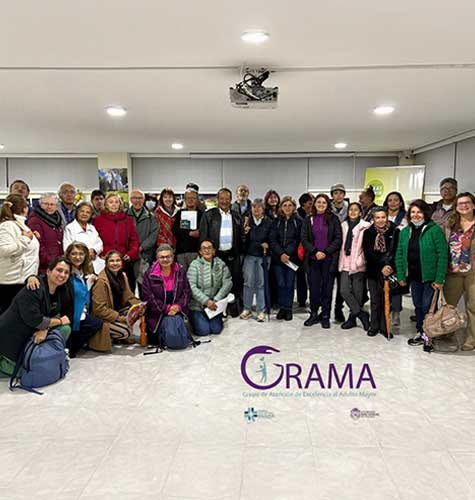
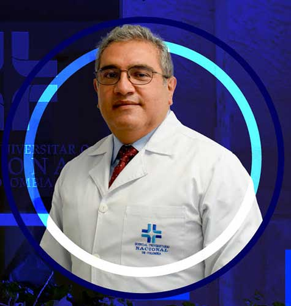

Ver todos los boletines
ESCLEROSIS MÚLTIPLE: LA ENFERMEDAD DE LAS MIL CARAS
Cada 30 de mayo, el mundo conmemora el Día Mundial de la Esclerosis Múltiple, una oportunidad para visibilizar esta compleja enfermedad neurológica que afecta a millones de personas en el planeta. En Colombia, la prevalencia es de 7,52 casos por cada 100.000 habitantes, una cifra que, si bien puede parecer baja, representa un reto significativo para el sistema de salud y para las personas que conviven con esta condición.Leer más

“TÚ NO ERES UNO MÁS”: LA HUMANIZACIÓN COMO SELLO DEL HUN
En el Hospital Universitario Nacional de Colombia (HUN), hablar de humanización no es simplemente referirse a un programa o a una serie de actividades. Es hablar de una cultura que se construye, se estructura, se evalúa y —sobre todo— se siente. Así lo explicó Jairo Pérez Cely, referente del Programa de Humanización del HUN, Director de Cuidado Crítico y Vicedecano Académico de la Facultad de Medicina UNAL, en una conversación que revela el corazón filosófico, técnico y humano de esta apuesta institucional.Leer más

35 JÓVENES DEL CATATUMBO ESTUDIARÁN EN LA UNAL
A partir del segundo semestre de 2025 los nuevos estudiantes iniciarán su formación en Medicina, Odontología, Nutrición, Fonoaudiología, Terapia Ocupacional, Medicina Veterinaria y Zootecnia gracias al proyecto “Conectando la salud a la región” y a través del Programa de Admisión Especial con Enfoque Territorial (PAET), que busca fortalecer la formación de talento humano en los territorios más afectados por el conflicto armado.Leer más

LANZAMIENTO ECBE REVASCULARIZACIÓN MIOCÁRDICA
Hoy se publicó el ECBE diagnóstico, tratamiento y rehabilitación del paciente con enfermedad coronaria candidato a cirugía de revascularización miocárdica.Leer más

GRUPO GRAMA CERRÓ ACTIVIDADES DE PRIMER SEMESTRE
Con 6 encuentros en vivo y 4 sesiones de GRAMA al barrio, el Grupo de Excelencia en la Atención al Adulto Mayor cerró su exitoso primer semestre de actividades GRAMA (Grupo de Atención de Excelencia al Adulto Mayor) es una iniciativa conjunta del Hospital Universitario Nacional de Colombia (HUN) y la Universidad Nacional de Colombia, dedicada a mejorar la calidad de vida de los adultos mayores mediante un enfoque interprofesional en investigación, innovación y extensión.Leer más

LA DIRECCIÓN GENERAL PASÓ AL TABLERO
Se llevó a cabo la reunión trimestral para comunicar los resultados del HUN.Leer más